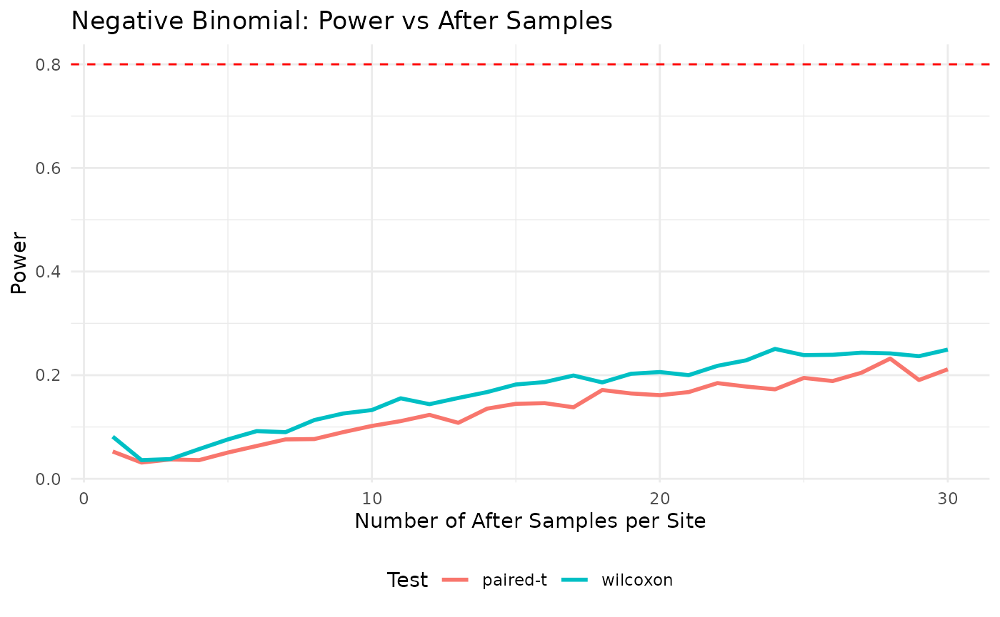
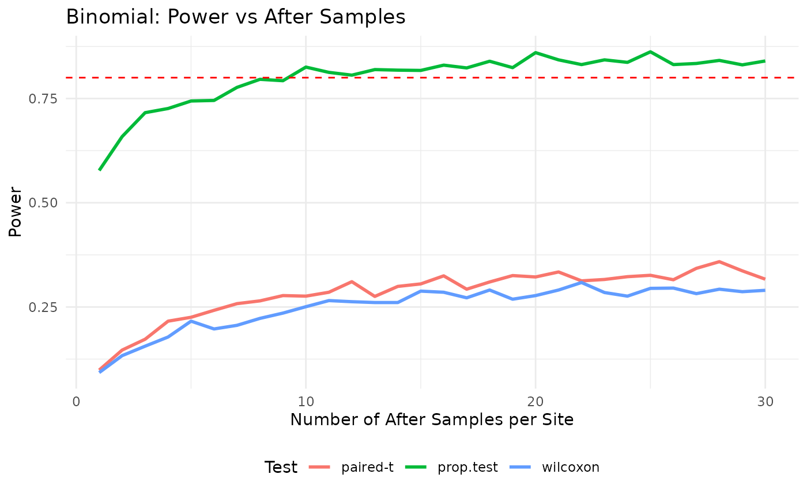
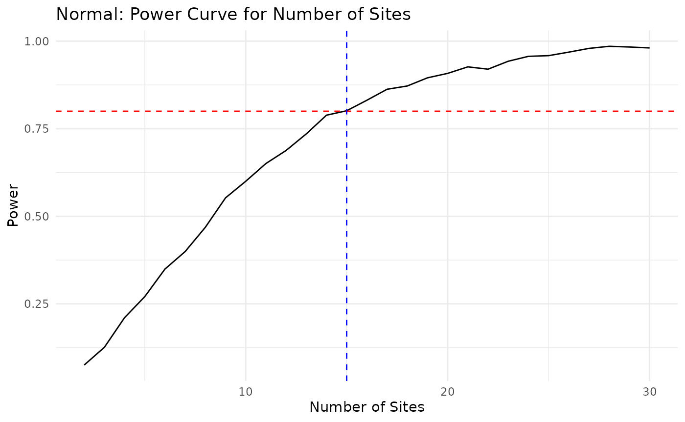

PowerAfterChange: Simulation Tests for Alternative Distributions and Tests
Beth Babcock
2026-02-22
NonNormalDistributionsAndTests.rmd
library(tidyverse)
theme_set(theme_minimal())
#devtools::install_github("ebabcock/PowerAfterChange")
library(PowerAfterChange)This vignette simulates data and tests the updated functions across
supported distributions (normal, nbinom,
binomial) and test options (paired-t,
wilcoxon, prop.test).
Shared simulation settings
set.seed(2026)
S_demo <- 12
nB_demo <- 5
sd_w <- 1.5
sd_d <- 0.4
alpha <- 0.05
nsim <- 1500
n_grid <- 1:30Normal distribution tests
delta_target <- 0.8
res_normal_t <- find_n_after(
S = S_demo, nB = nB_demo,
delta = delta_target, sd_w = sd_w, sd_d = sd_d,
target_power = 0.8, alpha = alpha, n_grid = n_grid,
nsim = nsim, seed = 1,
distribution = "normal",
useTest = "paired-t"
)
res_normal_w <- find_n_after(
S = S_demo, nB = nB_demo,
delta = delta_target, sd_w = sd_w, sd_d = sd_d,
target_power = 0.8, alpha = alpha, n_grid = n_grid,
nsim = nsim, seed = 2,
distribution = "normal",
useTest = "wilcoxon"
)
normal_plot_df <- bind_rows(
res_normal_t$curve %>% mutate(method = "paired-t"),
res_normal_w$curve %>% mutate(method = "wilcoxon")
)
ggplot(normal_plot_df, aes(x = n_after, y = power, color = method)) +
geom_line(size = 1) +
geom_hline(yintercept = 0.8, linetype = "dashed", color = "red") +
labs(
title = "Normal: Power vs After Samples",
x = "Number of After Samples per Site",
y = "Power",
color = "Test"
) +
theme(legend.position = "bottom")
Negative binomial tests (log-additive change)
nbinom_mu <- 12
nbinom_disp <- 2
delta_target_nb <- log(1.25) # additive on log scale
res_nb_t <- find_n_after(
S = S_demo, nB = nB_demo,
delta = delta_target_nb, sd_w = sd_w, sd_d = sd_d,
target_power = 0.8, alpha = alpha, n_grid = n_grid,
nsim = nsim, seed = 3,
distribution = "nbinom",
useTest = "paired-t",
nbinom_mu = nbinom_mu,
nbinom_disp = nbinom_disp
)
res_nb_w <- find_n_after(
S = S_demo, nB = nB_demo,
delta = delta_target_nb, sd_w = sd_w, sd_d = sd_d,
target_power = 0.8, alpha = alpha, n_grid = n_grid,
nsim = nsim, seed = 4,
distribution = "nbinom",
useTest = "wilcoxon",
nbinom_mu = nbinom_mu,
nbinom_disp = nbinom_disp
)
nb_plot_df <- bind_rows(
res_nb_t$curve %>% mutate(method = "paired-t"),
res_nb_w$curve %>% mutate(method = "wilcoxon")
)
ggplot(nb_plot_df, aes(x = n_after, y = power, color = method)) +
geom_line(size = 1) +
geom_hline(yintercept = 0.8, linetype = "dashed", color = "red") +
labs(
title = "Negative Binomial: Power vs After Samples",
x = "Number of After Samples per Site",
y = "Power",
color = "Test"
) +
theme(legend.position = "bottom")
Binomial tests (logit-additive change)
binomial_size <- 20
binomial_prob <- 0.35
delta_target_bin <- qlogis(0.45) - qlogis(binomial_prob)
res_bin_t <- find_n_after(
S = S_demo, nB = nB_demo,
delta = delta_target_bin, sd_w = sd_w, sd_d = sd_d,
target_power = 0.8, alpha = alpha, n_grid = n_grid,
nsim = nsim, seed = 5,
distribution = "binomial",
useTest = "paired-t",
binomial_size = binomial_size,
binomial_prob = binomial_prob
)
res_bin_w <- find_n_after(
S = S_demo, nB = nB_demo,
delta = delta_target_bin, sd_w = sd_w, sd_d = sd_d,
target_power = 0.8, alpha = alpha, n_grid = n_grid,
nsim = nsim, seed = 6,
distribution = "binomial",
useTest = "wilcoxon",
binomial_size = binomial_size,
binomial_prob = binomial_prob
)
res_bin_prop <- find_n_after(
S = S_demo, nB = nB_demo,
delta = delta_target_bin, sd_w = sd_w, sd_d = sd_d,
target_power = 0.8, alpha = alpha, n_grid = n_grid,
nsim = nsim, seed = 7,
distribution = "binomial",
useTest = "prop.test",
binomial_size = binomial_size,
binomial_prob = binomial_prob
)
bin_plot_df <- bind_rows(
res_bin_t$curve %>% mutate(method = "paired-t"),
res_bin_w$curve %>% mutate(method = "wilcoxon"),
res_bin_prop$curve %>% mutate(method = "prop.test")
)
ggplot(bin_plot_df, aes(x = n_after, y = power, color = method)) +
geom_line(size = 1) +
geom_hline(yintercept = 0.8, linetype = "dashed", color = "red") +
labs(
title = "Binomial: Power vs After Samples",
x = "Number of After Samples per Site",
y = "Power",
color = "Test"
) +
theme(legend.position = "bottom")
Sanity checks for power_for_sites
site_res_normal <- find_min_sites(
nB = nB_demo, nA = 5,
delta = delta_target, sd_w = sd_w, sd_d = sd_d,
target_power = 0.8, alpha = alpha,
S_grid = 2:30, nsim = nsim, seed = 11,
distribution = "normal",
useTest = "paired-t"
)
ggplot(site_res_normal$curve, aes(x = S, y = power)) +
geom_line() +
geom_hline(yintercept = 0.8, linetype = "dashed", color = "red") +
geom_vline(xintercept = site_res_normal$S_star, linetype = "dashed", color = "blue") +
labs(title = "Normal: Power Curve for Number of Sites",
x = "Number of Sites",
y = "Power")